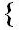

Dr. W T. Bensley
The Author
Edinburgh Museum of Science and Art
F. W. Phillips, Esqr.
LIST OF PLATES
SHOES
| No. | PLATE | OWNER | PAGE | |||
| I. | MEDI�VAL SHOES | Northampton Museum | 71 | |||
| II. | MEDI�VAL SHOES | Guildhall Museum, London | 71 | |||
| III. | MEDI�VAL AND OTHER SHOES | Mrs. Seymour Lucas and The Author | 73 | |||
| IV. | MEDI�VAL TOE-PIECES | Guildhall Museum, London | 75 | |||
| V. | MEDI�VAL SHOE AND PATTENS | " " | 76 | |||
| VI. | BOOTS OF KING HENRY VI | Free Public Museums, Liverpool | 77 | |||
| VII. | PEAKED SHOE, FIFTEENTH CENTURY | G. C. Hait�, Esqr. | 78 | |||
| VIII. | CHOPINES | Ashmolean and British Museums. | 79 | |||
| IX. | QUEEN ELIZABETH�S BUSKINS | Ashmolean Museum, Oxford | 81 | |||
| X. |
 |
SHOES OF QUEEN ELIZABETH | Earl Brownlow | 82 | ||
| SHOE OF QUEEN OF BOHEMIA | Saffron Waldon Museum | 83 | ||||
| XI. | SHOES OF KING CHARLES I | Gen. W. E. G. Lytton-Bulwer | 84 | |||
| XII. | CAVALIERS BOOTS, SEVENTEENTH CENTURY | Northampton Museum | 85 | |||
| XIII. | MILITARY JACK-BOOTS " " | Tower of London | 86 | |||
| XIV. | CAPTAIN LENCHE�S BOOT " " | A. S. Field, Esqr. | 87 | |||
| XV. | MILITARY BOOTS " " | Lord Donington | 88 | |||
| XVI. | SHOES OF QUEEN ANNE | Mrs. Simpson Carson |
|
89 | ||
| SHOES AND CLOGS | Northampton Museum | |||||
| XVII. | DUKE OF GLOUCESTER�S BOOT | Ashmolean Museum, Oxford | 90 | |||
| XVIII. | SHOES OF REIGN OF QUEEN ANNE | Mrs. Seymour Lucas | 91 | |||
| PAIR OF LADY�S SHOES, SEVENTEENTH CENTURY |
|
The Author | 92 | |||
| XIX. | LADIES� SHOES, SEVENTEENTH CENTURY | Mrs. Elkin Mathews | 93 | |||
| XX. | SHOES OF THE REIGN OF WILLIAM AND MARY |
|
Mrs. Seymour Lucas | 94 | ||
| LORD TREVOR�S SHOES | ||||||
| XXI. | SHOE OF THE REIGN OF GEORGE II | Mrs. Seymour Lucas | 95 | |||
| A LADY�S SHOE, EIGHTEENTH CENTURY | Mrs. C. M. Prickett | 95 | ||||
| COMBINED SHOE AND CLOG | Mrs. Seymour Lucas | 96 | ||||
| XXII. | MUD GUARDS, EIGHTEENTH CENTURY | Northampton Museum | 97 | |||
| A POSTILLION�S BOOT, EIGHTEENTH CENTURY |
|
Castle Museum, Norwich | 98 | |||
| A MILITARY GAITER " " | ||||||
| XXIII. | LADY�S YELLOW SHOES, EIGHTEENTH CENTURY | The Author | 99 | |||
| A GENTLEMAN�S SHOE " " | Whitby Museum | 99 | ||||
| XXIV. | A LADY�S SHOES AND CLOGS " " |
Dr. W T. Bensley |
100 | |||
| XXV. | SLIPPERS AND SHOES " " |
The Author |
101 | |||
| XXVI. | A BRIDAL SHOE " " |
Edinburgh Museum of Science and Art |
103 | |||
| A LADY�S SHOE " " | W. Cole Plowright, Esqr. | 103 | ||||
| XXVII. | VARIOUS SHOES, SLIPPERS, AND CLOGS | W. P. Gibbs, Esqr. | 104 | |||
| The Author | 105 | |||||
| XXVIII. | EASTERN SHOES AND CHOPINES | The Author | 106 | |||
| TURKISH SLIPPERS | A. Clark-Kennedy, Esqr. | 106 | ||||
| XXIX. | ORIENTAL CHILDREN�S SHOES | Norwich Museum | 107 | |||
| R. Farren, Esqr. | 107 | |||||
| XXX. | AFRICAN SANDALS | The Author | 108 | |||
| Cole Ambrose, Esqr. | 108 | |||||
| XXXI. | AMERICAN MOCASSINS | Cole Ambrose, Esqr. | 109 | |||
| AFRICAN SANDALS |
F. W. Phillips, Esqr. |
109 | ||||
| XXXII. | CHOPINES | J. H Fitshenry, Esqr. | 110 |